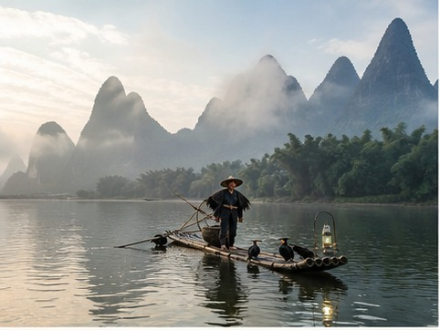
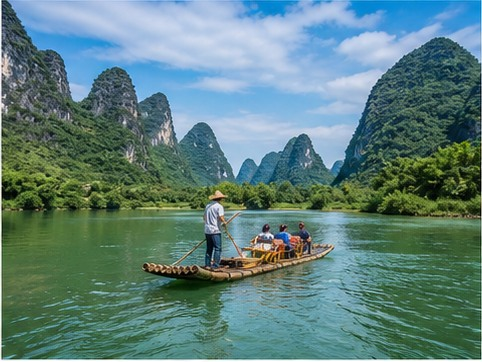
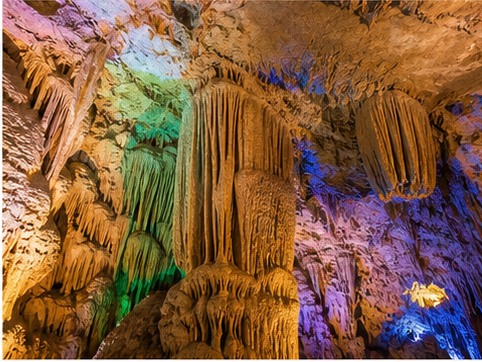
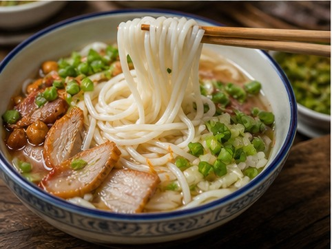

01
Li River
Travel between karst peaks by cruise or carefully chosen raft section.
China's landscape in ink and water
In southern China, the Li River winds between limestone peaks that rise almost vertically from the plain. The landscape has inspired Chinese painters and poets for centuries, creating the feeling of moving through a living ink-wash painting rather than a conventional scenic region.
Guilin is best experienced outdoors: a river journey toward Yangshuo, cycling beside fields, bamboo rafting on the Yulong River, and walking through rice terraces or limestone caves. It suits travelers who want to slow down, leave the megacities behind, and let the landscape set the pace.
01
Start here

Travel between karst peaks by cruise or carefully chosen raft section.
Cycle or drive through fields beneath dramatic limestone hills.
Guilin’s recognizable riverside landmark in the city center.
Layered mountain fields and village landscapes north of Guilin.

A quieter bamboo-raft experience through rural scenery.

Walk through illuminated limestone chambers near Yangshuo.
02
Eat like a local

03
Recommended time
Three or four days connect Guilin and Yangshuo; a fifth leaves room for the Longji terraces.
Get ItinerarySee Guilin’s city landmarks, travel the Li River, and spend unhurried time in Yangshuo.
Add Yulong River, countryside cycling, a cave, and a slower evening in Yangshuo.
Add the Longji Rice Terraces with an overnight or well-timed private transfer.
Your Guilin, made clearer
Tell us your preferred pace and outdoor interests. We’ll connect Guilin, Yangshuo, and the terraces without wasting the landscape in transit.
Start With Your Guilin Trip